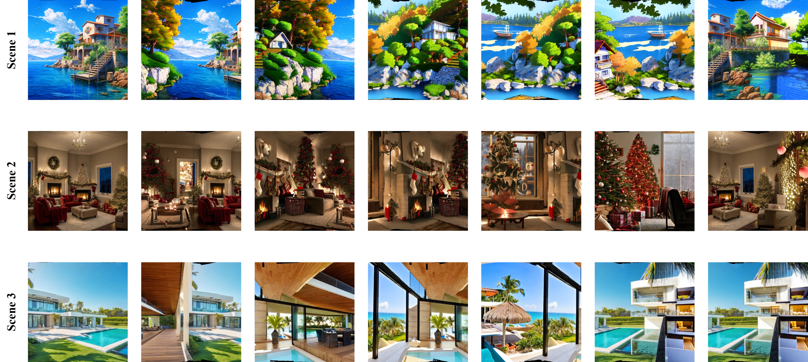

With the widespread adoption of VR devices and immersive content, the demand for progressive 3D scene generation is rapidly increasing. An effective virtual scene should satisfy 1) structural consistency for free-viewpoint exploration and 2) scene-level semantic coherence with the input description. However, when a scene is expanded progressively from limited observations, existing pipelines are prone to error accumulation: small depth or alignment errors can gradually amplify into geometric distortion, while locally synthesized views may drift from the intended scene semantics, resulting in inconsistent layouts and illogical content. To address these limitations, we propose SceneArchitect, a progressive 3D scene generation framework built on two core components: Structural Consolidation, which leverages a foreground-centric reconstruction strategy together with cross-view depth alignment and fusion to preserve geometric coherence during scene growth, and Semantic Grounding, which maintains a global reference view for completion-region localization and scene-level context preservation, followed by context-aware prompt refinement to keep local synthesis controllable without drifting from the overall semantics. To further stabilize the final 3D representation, we introduce a depth-regularized Gaussian refinement strategy with staged optimization, improving robustness under imperfect monocular depth priors while retaining fine-grained appearance. Extensive experiments on diverse indoor and outdoor scenes show that SceneArchitect mitigates geometric and semantic error accumulation, achieving better structural coherence, semantic consistency, and overall visual quality than representative baselines for progressive 3D scene generation.
The video summarizes progressive scene growth, free-viewpoint rendering, and representative results in both virtual and real scenes.

Method overview of SceneArchitect. SceneArchitect alternates Structural Consolidation for geometric stabilization and Semantic Grounding for scene-level coherence during progressive scene growth, followed by depth-regularized Gaussian refinement with staged optimization. The overall design explicitly targets the coupled accumulation of geometric and semantic errors in long-horizon scene expansion.
Before comparing with prior methods, we first present representative results of SceneArchitect on four scenes to provide an overall impression of the generated scene quality. These examples illustrate that SceneArchitect can produce coherent 3D scenes with stable structures, plausible local details, and consistent scene semantics across diverse layouts.

Then we compare SceneArchitect with representative progressive scene generation baselines on a representative indoor scene and report quantitative metrics on six scenes with thirty rendered views per scene. The qualitative comparison highlights how SceneArchitect preserves clearer geometry and more coherent local completions under large viewpoint changes, while the quantitative table summarizes text--scene alignment and perceptual quality across representative baselines.

Representative qualitative comparison on an indoor scene. SceneArchitect produces more coherent geometry and more stable scene completions during progressive view expansion, especially in regions where large parallax, occlusion, or local inpainting ambiguity make long-horizon generation difficult.
Selected quantitative metrics on representative baselines. Bold indicates the best result, and underline indicates the second-best result.
| Method | Aesthetic ↑ | CLIP-Score ↑ | CLIP-IQA ↑ | BRISQUE ↓ | NIQE ↓ | ||
|---|---|---|---|---|---|---|---|
| Quality | Colorful | Sharp | |||||
| Text2Room | 4.415 | 25.556 | 0.465 | 0.104 | 0.332 | 42.552 | 3.732 |
| LucidDreamer | 4.923 | 30.443 | 0.619 | 0.730 | 0.199 | 38.301 | 5.834 |
| BloomScene | 5.088 | 31.810 | 0.743 | 0.701 | 0.250 | 24.260 | 3.303 |
| DreamScene360 | 4.858 | 28.602 | 0.500 | 0.495 | 0.158 | 29.727 | 5.091 |
| LayerPano3D | 4.994 | 31.383 | 0.795 | 0.808 | 0.183 | 23.966 | 3.212 |
| WonderJourney | 4.846 | 30.300 | 0.672 | 0.680 | 0.200 | 26.355 | 5.001 |
| WonderWorld | 4.922 | 32.443 | 0.803 | 0.813 | 0.258 | 25.027 | 3.225 |
| SceneArchitect (Ours) | 5.136 | 33.514 | 0.803 | 0.845 | 0.279 | 22.696 | 3.074 |
Summary. Across these metrics, SceneArchitect achieves the best overall trade-off among structural stability, semantic alignment, and perceptual quality. In particular, it attains the highest CLIP-Score and Aesthetic score while maintaining stronger no-reference quality than prior methods.
We provide both qualitative and quantitative ablations to clarify the contribution of Structural Consolidation, depth-regularized Gaussian refinement, staged freezing, and Semantic Grounding under prompt perturbation. The following results illustrate not only which components matter, but also how each component changes the generated geometry and scene behavior in practice.

Ablation study of SceneArchitect. Structural Consolidation improves the geometric prior for expansion, while depth regularization and staged freezing stabilize Gaussian refinement under imperfect monocular depth priors.
| Method | Aesthetic ↑ | CLIP-Score ↑ | CLIP-IQA ↑ | BRISQUE ↓ | NIQE ↓ | ||
|---|---|---|---|---|---|---|---|
| Quality | Colorful | Sharp | |||||
| w/o Structural Consolidation | 5.433 | 34.145 | 0.898 | 0.981 | 0.747 | 23.460 | 3.109 |
| w/o Depth Regularization | 5.313 | 30.724 | 0.784 | 0.951 | 0.627 | 25.491 | 3.287 |
| w/o Freezing | 5.463 | 32.478 | 0.801 | 0.969 | 0.792 | 23.460 | 3.155 |
| Full model (Ours) | 5.593 | 34.978 | 0.910 | 0.983 | 0.807 | 22.696 | 3.002 |
Main ablation summary. Removing depth regularization leads to noisier geometry and stronger artifact accumulation, while removing staged freezing still causes unstable local deformation. This supports the claim that depth regularization alone is insufficient and that staged freezing is necessary to stabilize Gaussian refinement before appearance refinement.

Depth regularization vs. staged freezing. Without depth regularization, the rendered scenes exhibit obvious holes and incomplete geometry. Without staged freezing, local structures become stretched or fragmented, which is also visible in the depth maps. The full model yields cleaner geometry and more stable local structure.
| Method | CLIP-Score ↑ | Quality ↑ | Sharp ↑ |
|---|---|---|---|
| P-change + w/o SG | 26.998 | 0.720 | 0.704 |
| P-change + Full | 34.147 | 0.881 | 0.778 |
Prompt perturbation. We further stress-test Semantic Grounding by injecting prompts with larger semantic deviation during scene growth. Under this setting, Semantic Grounding improves CLIP-Score from 26.998 to 34.147, while Quality and Sharp rise from 0.720 / 0.704 to 0.881 / 0.778, highlighting the importance of scene-level anchoring when the prompt is revised mid-generation.

Prompt perturbation under scene growth. We inject new prompts with larger semantic deviation during progressive expansion, including additional scene content and style cues. Compared with the variant without Semantic Grounding, the full model produces more coherent style transitions and better integrates newly introduced content into the surrounding scene context.
Beyond the main-paper comparisons, we further visualize SceneArchitect under broader exploration settings and more diverse scene types. These additional results highlight the practical value of the method for immersive scene browsing, controllable scene generation, and stable free-viewpoint exploration in both virtual and real environments.

360° rendered views of representative scenes. We render seven viewpoints per scene along a full 360° traversal. The three examples include a virtual seaside scene, a real indoor Christmas-cabin scene, and a real outdoor scene. The first and last views remain visually well aligned, showing that SceneArchitect can maintain stable structures, consistent scene semantics, and visually coherent closed-loop exploration under wide-view traversal.

Additional generated scenes in virtual and real settings. We show more results under both text-only and image+text inputs, including real scenes such as a bedroom, fruit market, and kitchen, as well as additional virtual scenes. RGB renderings and depth visualizations are shown together to illustrate that SceneArchitect can preserve global layout and scene-level coherence across diverse content types and input modes.
More animated results, RGB-depth browsing examples, and interactive 3D visualizations are available below and on the anonymous project page. Together, these additional results complement the main paper by showing that the method remains stable under wider camera traversal, more diverse scene content, and more flexible user inputs.
The following examples show RGB renderings together with their corresponding depth visualizations. These dynamic demonstrations provide a more intuitive view of the generated geometry, local structure, and appearance consistency during scene exploration. Additional animated results and interactive 3D visualizations are also available on the anonymous project page.
Outdoor Scenes


Indoor Scenes


These RGB-depth demonstrations further illustrate that SceneArchitect supports both virtual and real scenes under text-only and image+text inputs. The depth views help reveal the recovered spatial layout, while the RGB animations show that the resulting scenes remain plausible for subsequent rendering and exploration.